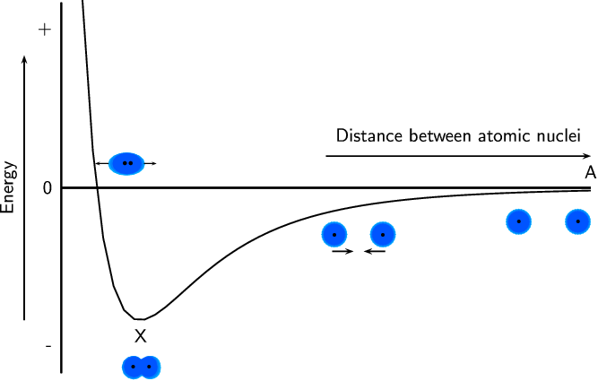

<code>
(-5.5,-4)(6.5,4)
\psaxes[ticks=none,labels=none](-4,0)(-4,-3.5)(6,3.5)
\psplot{-3.6}{6}{0.15 x 10 add mul -12 exp 0.15 x 10 add mul -6 exp sub
10 mul}
\rput{90}(-5,0){Energy}
\psline{->}(-4.7,-2.5)(-4.7,2.5)
\uput[l](-4,3){+}
\uput[l](-4,0){0}
\uput[l](-4,-3){-}
\rput[u](3.5,1){Distance between atomic nuclei}
\psline{->}(1,0.6)(6,0.6)
\uput[u](6,0){A}
\pnode(-2.5,0){qTop}
\pnode(-2.5,-2.5){qBottom}
\pnode(-4,0.4){pLeft}
\pnode(-2.5,0.4){pRight}
\uput[d](-2.5,-2.5){X}
%the two atoms at point A
\scalebox{.4}{\rput(11,-1.6){
\definecolor{color99}{rgb}{0.0,0.5,1.0}
\definecolor{color113}{rgb}{0.0,0.67,1.0}
\definecolor{color8}{rgb}{0.0,0.33,1.0}
\pscircle[linecolor=color113,linestyle=dotted,fillstyle=solid,fillcolor=color113](0.6,0.0){0.6}
\pscircle[linecolor=color99,linestyle=dotted,fillstyle=solid,fillcolor=color99](0.6,0.0){0.56}
\pscircle[linecolor=color8,linestyle=dotted,fillstyle=solid,fillcolor=color8](0.6,0.0){0.5}
\psdots[dotsize=0.16](0.6,0.0)}}
\scalebox{.4}{\rput(13.5,-1.6){
\definecolor{color99}{rgb}{0.0,0.5,1.0}
\definecolor{color113}{rgb}{0.0,0.67,1.0}
\definecolor{color8}{rgb}{0.0,0.33,1.0}
\pscircle[linecolor=color113,linestyle=dotted,fillstyle=solid,fillcolor=color113](0.6,0.0){0.6}
\pscircle[linecolor=color99,linestyle=dotted,fillstyle=solid,fillcolor=color99](0.6,0.0){0.56}
\pscircle[linecolor=color8,linestyle=dotted,fillstyle=solid,fillcolor=color8](0.6,0.0){0.5}
\psdots[dotsize=0.16](0.6,0.0)}}
%the two atoms between X and A
\psline{->}(1,-1.2)(1.4,-1.2)
\psline{->}(2,-1.2)(1.6,-1.2)
\scalebox{.4}{\rput(2,-2.2){
\definecolor{color99}{rgb}{0.0,0.5,1.0}
\definecolor{color113}{rgb}{0.0,0.67,1.0}
\definecolor{color8}{rgb}{0.0,0.33,1.0}
\pscircle[linecolor=color113,linestyle=dotted,fillstyle=solid,fillcolor=color113](0.6,0.0){0.6}
\pscircle[linecolor=color99,linestyle=dotted,fillstyle=solid,fillcolor=color99](0.6,0.0){0.56}
\pscircle[linecolor=color8,linestyle=dotted,fillstyle=solid,fillcolor=color8](0.6,0.0){0.5}
\psdots[dotsize=0.16](0.6,0.0)
}}
\scalebox{.4}{\rput(4,-2.2){
\definecolor{color99}{rgb}{0.0,0.5,1.0}
\definecolor{color113}{rgb}{0.0,0.67,1.0}
\definecolor{color8}{rgb}{0.0,0.33,1.0}
\pscircle[linecolor=color113,linestyle=dotted,fillstyle=solid,fillcolor=color113](0.6,0.0){0.6}
\pscircle[linecolor=color99,linestyle=dotted,fillstyle=solid,fillcolor=color99](0.6,0.0){0.56}
\pscircle[linecolor=color8,linestyle=dotted,fillstyle=solid,fillcolor=color8](0.6,0.0){0.5}
\psdots[dotsize=0.16](0.6,0.0)}}
%and the atoms at X
\scalebox{0.4}{\rput(-8,-8.5){
\definecolor{color99}{rgb}{0.0,0.5019607843137255,1.0}
\definecolor{color8}{rgb}{0.0,0.3333333333333333,1.0}
\definecolor{color218}{rgb}{0.0,0.6666666666666666,1.0}
\psbezier[linewidth=0.04,linecolor=color218,fillstyle=solid,fillcolor=color218](0.0,0.02619693)(0.0,0.48028144)(0.5264151,0.62)(0.73018867,0.49774647)(0.9339623,0.37549296)(0.8320755,0.3056338)(1.0867925,0.4628169)(1.3415095,0.62)(1.8,0.55014086)(1.8,0.008732394)(1.8,-0.53267604)(1.2566037,-0.58507043)(1.0867925,-0.4453521)(0.91698116,-0.3056338)(0.9509434,-0.3405634)(0.73018867,-0.48028168)(0.509434,-0.62)(0.0,-0.4278876)(0.0,0.02619693)
\psbezier[linewidth=0.04,linecolor=color99,fillstyle=solid,fillcolor=color99](0.02,0.04535197)(0.02,0.4847886)(0.51716983,0.62)(0.7096226,0.50169015)(0.90207547,0.3833803)(0.8058491,0.31577465)(1.0464151,0.4678873)(1.2869811,0.62)(1.72,0.5523944)(1.72,0.028450705)(1.72,-0.49549296)(1.2067925,-0.5461972)(1.0464151,-0.41098592)(0.8860377,-0.27577466)(0.91811323,-0.30957747)(0.7096226,-0.44478872)(0.5011321,-0.58)(0.02,-0.39408466)(0.02,0.04535197)
\psbezier[linewidth=0.04,linecolor=color8,fillstyle=solid,fillcolor=color8](0.1,0.0628169)(0.1,0.45830986)(0.55037737,0.58)(0.72471696,0.4735211)(0.8990566,0.36704224)(0.8118868,0.3061972)(1.0298113,0.4430986)(1.2477359,0.58)(1.64,0.5191549)(1.64,0.047605634)(1.64,-0.42394367)(1.1750944,-0.46957746)(1.0298113,-0.34788734)(0.8845283,-0.22619718)(0.9135849,-0.25661972)(0.72471696,-0.37830985)(0.53584903,-0.5)(0.1,-0.33267605)(0.1,0.0628169)
\psdots[dotsize=0.16](1.26,0.04)
\psdots[dotsize=0.16](0.52,0.06)
}
}
%and finally the atoms past X
\scalebox{.45}{\rput(-8.5,1){
\definecolor{color1004b}{rgb}{0.0,0.3333333333333333,1.0}
\definecolor{color1056b}{rgb}{0.0,0.5019607843137255,1.0}
\definecolor{color1059b}{rgb}{0.0,0.6666666666666666,1.0}
\psellipse[linewidth=0.04,linecolor=color1059b,dimen=outer,fillstyle=solid,fillcolor=color1059b](1.31,0.0)(0.77,0.48)
\psellipse[linewidth=0.04,linecolor=color1056b,dimen=outer,fillstyle=solid,fillcolor=color1056b](1.32,0.02)(0.7,0.46)
\psellipse[linewidth=0.04,linecolor=color1004b,dimen=outer,fillstyle=solid,fillcolor=color1004b](1.33,0.02)(0.61,0.44)
\psdots[dotsize=0.16](1.48,0.04)
\psdots[dotsize=0.16](1.24,0.04)
\psline[linewidth=0.04cm,arrowinset=0.4]{->}(2.04,0.02)(2.56,0.02)
\psline[linewidth=0.04cm,arrowinset=0.4]{->}(0.56,0.02)(0.0,0.02)
}
}
</code>